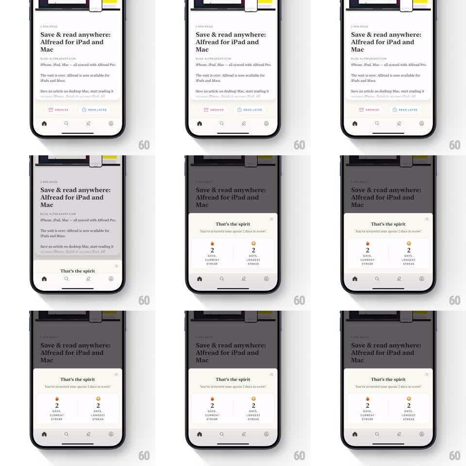

Media
Frame-by-frame

Rebuild this interaction 1:1: Alfread's streak sheet - after reviewing the queue, a springy bottom sheet slides up over the dimmed article list celebrating "That's the spirit" with current-streak and longest-streak stat columns.

Rebuild this interaction 1:1: Alfread's streak sheet - after reviewing the queue, a springy bottom sheet slides up over the dimmed article list celebrating "That's the spirit" with current-streak and longest-streak stat columns. ## Integration Integration: stack-agnostic spec - springs given as stiffness/damping, timed motions as duration + curve; map every value to your framework and animation library of choice. ## Scene Article list (headline "Save & read anywhere: Alfread for iPad and Mac") behind a dimming scrim. Sheet: white, rounded top corners, X close top right, bold "That's the spirit" title, sub-line "You've reviewed your queue 2 days in a row!", then two stat columns side by side - a small flame icon over "2 / DAYS / CURRENT STREAK" and a small medal icon over "2 / DAYS / LONGEST STREAK". ## Motion spec Pattern: spring celebration sheet with popping stat icons. - Scrim fades to ~45% black (200ms); the sheet slides up (spring stiffness ~300, damping ~28, ~400ms with one soft settle). - After the sheet lands: the title fades in (150ms), then the two icons pop (scale 0.5 to 1.0, spring stiffness ~340, damping ~18, 100ms apart), then the numbers count up from 0 to their values (~400ms each, ease-out), then the captions fade. - The flame icon has a gentle idle flicker (scale 1.0 to 1.05, 800ms sine) once landed. - X or scrim tap dismisses: sheet slides down (300ms, ease-in), scrim fades. ## Calibration - The number count-up is the celebration beat - static numbers make the sheet feel like a dialog. - Both columns animate as a pair with a small offset; a long stagger between them unbalances the layout. ## Reduced motion Sheet fades in fully composed (200ms); numbers render final. ## Don't miss - Current streak and longest streak are separate stats with separate icons - do not merge them into one number. - The sheet is purely celebratory: no buttons, the X is the only control.